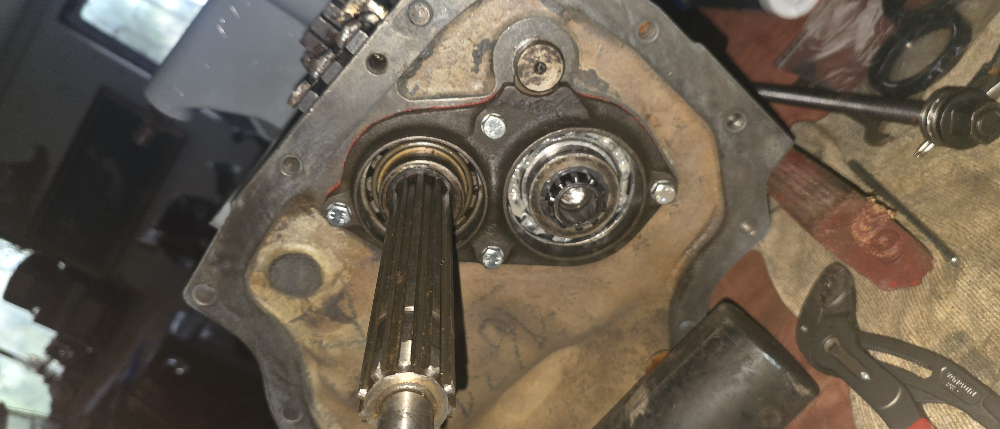
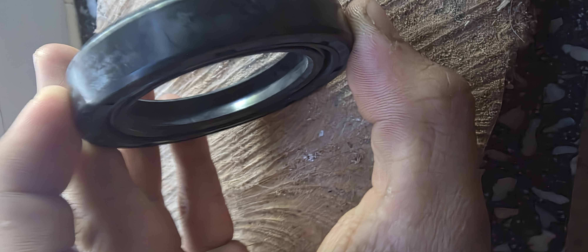
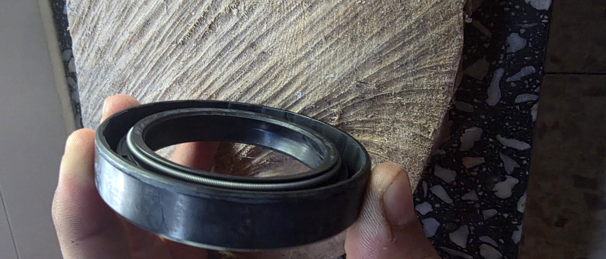

Dokumentation des Erneuerns der Lager und Wellendichtringe

Abziehen des Lagerflansches von der Getriebewelle. Die Dichtflächen und Lagersitze werden gründlich gereinigt und auf Einlaufspuren kontrolliert.
Einsetzen bzw. Überprüfen des passenden Wellendichtrings. Die Dichtlippe muss unverletzt sein und gleichmäßig an der Welle anliegen.

Vor dem Einbau wird die Wurmfeder im Inneren des Simmerrings kontrolliert, um ausreichend Anpressdruck der Dichtlippe zu gewährleisten.
